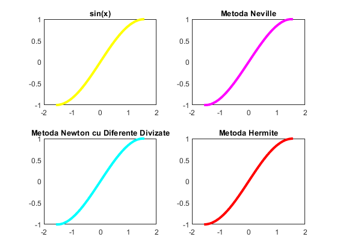
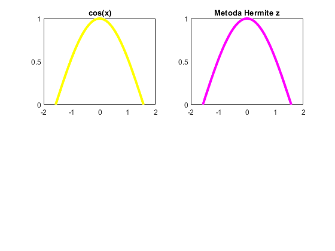
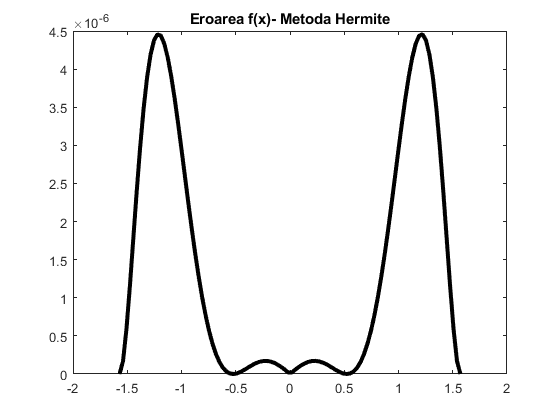
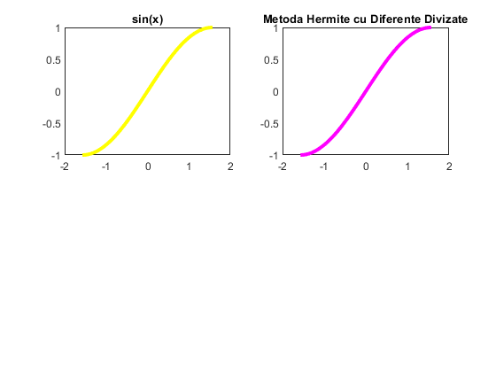
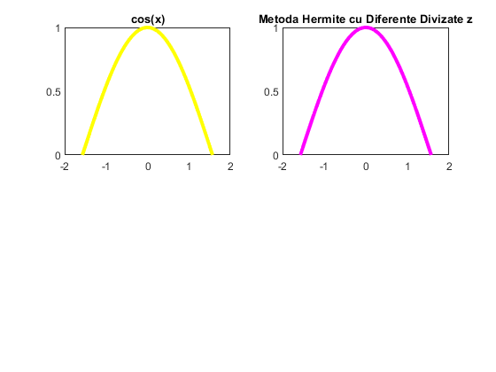
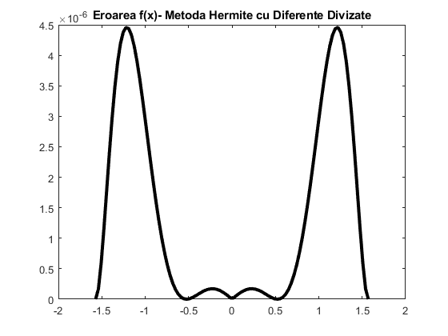

Tema lab05
Contents
Exercitiul 5
X = [-pi/2,-pi/6,pi/6,pi/2];
f = @(x)sin(x);
fp = @(x)cos(x);
Y = f(X);
Z = fp(X);
x = linspace(-pi/2,pi/2,100);
y = MetNeville(X,Y,x)
y = MetNDD(X,Y,x)
[y,z] = MetHermite(X,Y,Z,x)
figure(1);
grid on;
subplot(2,2,1);
plot(x, f(x),'y','LineWidth',3);
title('sin(x)');
subplot(2,2,2);
plot(x, MetNeville(X,Y,x),'m','LineWidth',3);
title('Metoda Neville');
subplot(2,2,3);
plot(x, MetNDD(X,Y,x),'c','LineWidth',3);
title('Metoda Newton cu Diferente Divizate');
subplot(2,2,4);
plot(x, y,'r','LineWidth',3);
title('Metoda Hermite');
figure(2);
grid on;
subplot(2,2,1);
plot(x, fp(x),'y','LineWidth',3);
title('cos(x)');
subplot(2,2,2);
plot(x, z,'m','LineWidth',3);
title('Metoda Hermite z');
figure(3);
grid on;
plot(x, abs(f(x)-y),'k','LineWidth',3);
title('Eroarea f(x)- Metoda Hermite');
y =
Columns 1 through 7
-1.0000 -1.0018 -1.0023 -1.0015 -0.9994 -0.9960 -0.9914
Columns 8 through 14
-0.9855 -0.9785 -0.9703 -0.9610 -0.9506 -0.9391 -0.9266
Columns 15 through 21
-0.9131 -0.8986 -0.8831 -0.8667 -0.8494 -0.8312 -0.8121
Columns 22 through 28
-0.7923 -0.7716 -0.7502 -0.7280 -0.7052 -0.6816 -0.6574
Columns 29 through 35
-0.6326 -0.6071 -0.5811 -0.5546 -0.5275 -0.5000 -0.4720
Columns 36 through 42
-0.4436 -0.4147 -0.3855 -0.3560 -0.3261 -0.2959 -0.2655
Columns 43 through 49
-0.2348 -0.2039 -0.1728 -0.1416 -0.1103 -0.0788 -0.0473
Columns 50 through 56
-0.0158 0.0158 0.0473 0.0788 0.1103 0.1416 0.1728
Columns 57 through 63
0.2039 0.2348 0.2655 0.2959 0.3261 0.3560 0.3855
Columns 64 through 70
0.4147 0.4436 0.4720 0.5000 0.5275 0.5546 0.5811
Columns 71 through 77
0.6071 0.6326 0.6574 0.6816 0.7052 0.7280 0.7502
Columns 78 through 84
0.7716 0.7923 0.8121 0.8312 0.8494 0.8667 0.8831
Columns 85 through 91
0.8986 0.9131 0.9266 0.9391 0.9506 0.9610 0.9703
Columns 92 through 98
0.9785 0.9855 0.9914 0.9960 0.9994 1.0015 1.0023
Columns 99 through 100
1.0018 1.0000
y =
Columns 1 through 7
-1.0000 -1.0018 -1.0023 -1.0015 -0.9994 -0.9960 -0.9914
Columns 8 through 14
-0.9855 -0.9785 -0.9703 -0.9610 -0.9506 -0.9391 -0.9266
Columns 15 through 21
-0.9131 -0.8986 -0.8831 -0.8667 -0.8494 -0.8312 -0.8121
Columns 22 through 28
-0.7923 -0.7716 -0.7502 -0.7280 -0.7052 -0.6816 -0.6574
Columns 29 through 35
-0.6326 -0.6071 -0.5811 -0.5546 -0.5275 -0.5000 -0.4720
Columns 36 through 42
-0.4436 -0.4147 -0.3855 -0.3560 -0.3261 -0.2959 -0.2655
Columns 43 through 49
-0.2348 -0.2039 -0.1728 -0.1416 -0.1103 -0.0788 -0.0473
Columns 50 through 56
-0.0158 0.0158 0.0473 0.0788 0.1103 0.1416 0.1728
Columns 57 through 63
0.2039 0.2348 0.2655 0.2959 0.3261 0.3560 0.3855
Columns 64 through 70
0.4147 0.4436 0.4720 0.5000 0.5275 0.5546 0.5811
Columns 71 through 77
0.6071 0.6326 0.6574 0.6816 0.7052 0.7280 0.7502
Columns 78 through 84
0.7716 0.7923 0.8121 0.8312 0.8494 0.8667 0.8831
Columns 85 through 91
0.8986 0.9131 0.9266 0.9391 0.9506 0.9610 0.9703
Columns 92 through 98
0.9785 0.9855 0.9914 0.9960 0.9994 1.0015 1.0023
Columns 99 through 100
1.0018 1.0000
  
Exercitiul 8
f = @(x)sin(x);
fp = @(x)cos(x);
X = [-pi/2,-pi/6,pi/6,pi/2];
Y = f(X);
Z = fp(X);
x = linspace(-pi/2,pi/2,100);
[y,z] = MetHermiteDD(X,Y,Z,x);
figure(4);
grid on;
subplot(2,2,1);
plot(x, f(x),'y','LineWidth',3);
title('sin(x)');
subplot(2,2,2);
plot(x, y,'m','LineWidth',3);
title('Metoda Hermite cu Diferente Divizate');
figure(5);
grid on;
subplot(2,2,1);
plot(x, fp(x),'y','LineWidth',3);
title('cos(x)');
subplot(2,2,2);
plot(x, z,'m','LineWidth',3);
title('Metoda Hermite cu Diferente Divizate z');
figure(6);
grid on;
plot(x, abs(f(x)-y),'k','LineWidth',3);
title('Eroarea f(x)- Metoda Hermite cu Diferente Divizate');
[y,z] = MetHermiteDD(X,Y,Z,pi/2)
y =
1.0000
z =
1.0408e-17
  
Algoritmi functii folosite
function [y, z] = MetHermite(X, Y, Z, x)
n = length(X)-1;
Her = 0;
HerD = 0;
for k=1:n+1
Lpk = zeros(size(x));
Ld = zeros(size(x));
L = ones(size(x));
produs = ones(size(x));
numitor = ones(size(x));
asemenea = zeros(size(x));
for i=1:n+1
if i~=k
for m=1:length(x)
if (x(m)-X(i))~=0
produs(m) = produs(m) * (x(m)-X(i));
else
asemenea(m) = 1;
end
end
numitor = numitor .* (X(k)-X(i));
end
end
for i=1:n+1
if i~=k
L = L .* (x-X(i))./(X(k)-X(i));
Lpk = Lpk + 1./(X(k)-X(i));
for m=1:length(x)
if (x(m)-X(i))~=0
if asemenea(m)==0
Ld(m) = Ld(m) + produs(m)/((x(m)-X(i))*(numitor(m)));
end
else
Ld(m) = Ld(m) + produs(m)/numitor(m);
end
end
end
end
H = L.*L.*(1-2.*Lpk.*(x-X(k)));
K = L.*L.*(x-X(k));
Her = Her + H.*Y(k) + K.*Z(k);
Hd = 2.*L.*Ld.*(1-2.*Lpk.*(x-X(k))) - L.*L.*2.*Lpk;
Kd = 2.*L.*Ld.*(x-X(k)) + L.*L;
HerD = HerD + Hd.*Y(k) + Kd.*Z(k);
end
y = Her;
z = HerD;
end
function [y,z] = MetHermiteDD(X,Y,Z,x)
n = length(X)-1;
for i=1:n+1
XB(2*i-1) = X(i);
XB(2*i) = X(i);
end
Q = zeros(2*n+2);
for i=1:n+1
Q(2*i-1,1) = Y(i);
Q(2*i,1) = Y(i);
Q(2*i,2) = Z(i);
if i>=2
Q(2*i-1,2) = (Q(2*i-1, 1) - Q(2*i-2,1)) / (XB(2*i-1) - XB(2*i-2));
end
end
for i=3:2*n+2
for j=3:i
Q(i,j) = (Q(i,j-1) - Q(i-1,j-1)) / (XB(i) - XB(i-j+1));
end
end
for index=1:length(x)
y(index) = Q(1,1);
z(index) = 0;
for k=2:2*n+2
sumaprod = 0;
asemenea=0;
produs = 1;
produsDiv = 1;
for m=1:k-1
produs = produs*(x(index)-XB(m));
if (x(index)-XB(m))~=0
produsDiv = produsDiv*(x(index)-XB(m));
else
asemenea= asemenea + 1;
end
end
for m=1:k-1
if (x(index)-XB(m)) ~= 0
if asemenea==0
sumaprod = sumaprod + produsDiv/(x(index)-XB(m));
end
else
if asemenea==1
sumaprod = sumaprod + produsDiv;
end
end
end
z(index) = z(index) + sumaprod*Q(k,k);
y(index) = y(index) + Q(k,k)*produs;
end
end
end
function [y] = MetNDD(X,Y,x)
n = length(X)-1;
Q = zeros(n+1);
for i=1:n+1
Q(i,1) = Y(i);
end
for i=2:n+1
for j=2:i
Q(i,j) = (Q(i,j-1) - Q(i-1,j-1)) / (X(i)-X(i-j+1));
end
end
for index=1:length(x)
y(index) = Q(1,1);
for k=2:n+1
produs = 1;
for z=1:k-1
produs = produs*(x(index)-X(z));
end
y(index) = y(index) + Q(k,k)*produs;
end
end
end
function [y] = MetNeville(X,Y,x)
n = length(X)-1;
Q = zeros(n+1);
for index=1:length(x)
for i=1:n+1
Q(i,1) = Y(i);
end
for i=2:n+1
for j=2:i
Q(i,j) = ((x(index)-X(i-j+1))*Q(i,j-1)-(x(index)-X(i))*Q(i-1,j-1)) / (X(i) - X(i-j+1));
end
end
y(index) = Q(n+1,n+1);
end
end
y =
Columns 1 through 7
-1.0000 -0.9995 -0.9980 -0.9955 -0.9920 -0.9874 -0.9819
Columns 8 through 14
-0.9754 -0.9679 -0.9595 -0.9501 -0.9397 -0.9284 -0.9161
Columns 15 through 21
-0.9029 -0.8888 -0.8738 -0.8580 -0.8413 -0.8237 -0.8053
Columns 22 through 28
-0.7861 -0.7660 -0.7453 -0.7237 -0.7015 -0.6785 -0.6549
Columns 29 through 35
-0.6306 -0.6056 -0.5801 -0.5539 -0.5272 -0.5000 -0.4723
Columns 36 through 42
-0.4441 -0.4154 -0.3863 -0.3569 -0.3271 -0.2969 -0.2665
Columns 43 through 49
-0.2358 -0.2048 -0.1736 -0.1423 -0.1108 -0.0792 -0.0476
Columns 50 through 56
-0.0159 0.0159 0.0476 0.0792 0.1108 0.1423 0.1736
Columns 57 through 63
0.2048 0.2358 0.2665 0.2969 0.3271 0.3569 0.3863
Columns 64 through 70
0.4154 0.4441 0.4723 0.5000 0.5272 0.5539 0.5801
Columns 71 through 77
0.6056 0.6306 0.6549 0.6785 0.7015 0.7237 0.7453
Columns 78 through 84
0.7660 0.7861 0.8053 0.8237 0.8413 0.8580 0.8738
Columns 85 through 91
0.8888 0.9029 0.9161 0.9284 0.9397 0.9501 0.9595
Columns 92 through 98
0.9679 0.9754 0.9819 0.9874 0.9920 0.9955 0.9980
Columns 99 through 100
0.9995 1.0000
z =
Columns 1 through 7
0.0000 0.0317 0.0634 0.0951 0.1266 0.1580 0.1893
Columns 8 through 14
0.2203 0.2512 0.2817 0.3120 0.3420 0.3717 0.4009
Columns 15 through 21
0.4298 0.4582 0.4862 0.5137 0.5406 0.5670 0.5929
Columns 22 through 28
0.6181 0.6428 0.6668 0.6901 0.7127 0.7346 0.7557
Columns 29 through 35
0.7761 0.7958 0.8146 0.8326 0.8497 0.8660 0.8815
Columns 36 through 42
0.8960 0.9096 0.9224 0.9341 0.9450 0.9549 0.9638
Columns 43 through 49
0.9718 0.9788 0.9848 0.9898 0.9938 0.9969 0.9989
Columns 50 through 56
0.9999 0.9999 0.9989 0.9969 0.9938 0.9898 0.9848
Columns 57 through 63
0.9788 0.9718 0.9638 0.9549 0.9450 0.9341 0.9224
Columns 64 through 70
0.9096 0.8960 0.8815 0.8660 0.8497 0.8326 0.8146
Columns 71 through 77
0.7958 0.7761 0.7557 0.7346 0.7127 0.6901 0.6668
Columns 78 through 84
0.6428 0.6181 0.5929 0.5670 0.5406 0.5137 0.4862
Columns 85 through 91
0.4582 0.4298 0.4009 0.3717 0.3420 0.3120 0.2817
Columns 92 through 98
0.2512 0.2203 0.1893 0.1580 0.1266 0.0951 0.0634
Columns 99 through 100
0.0317 0.0000